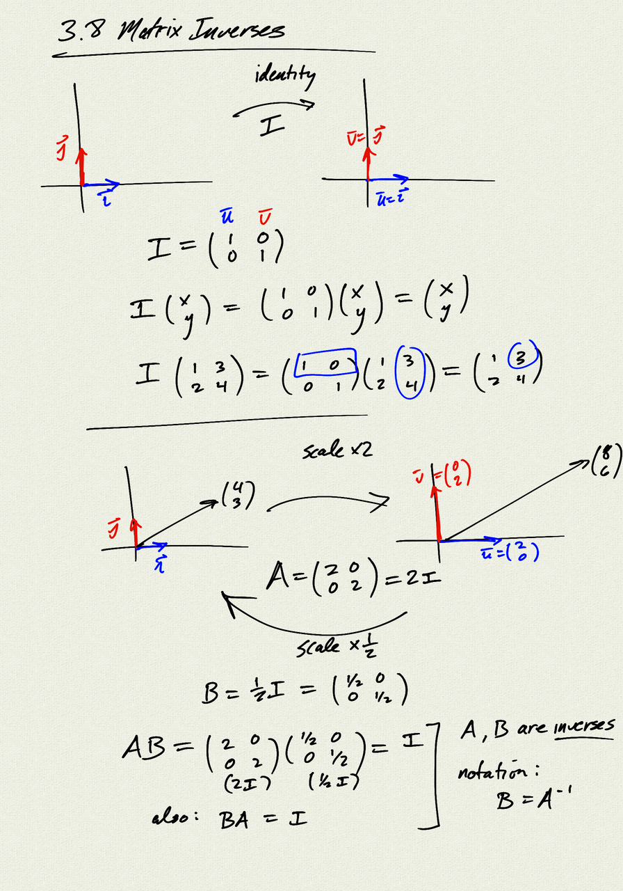
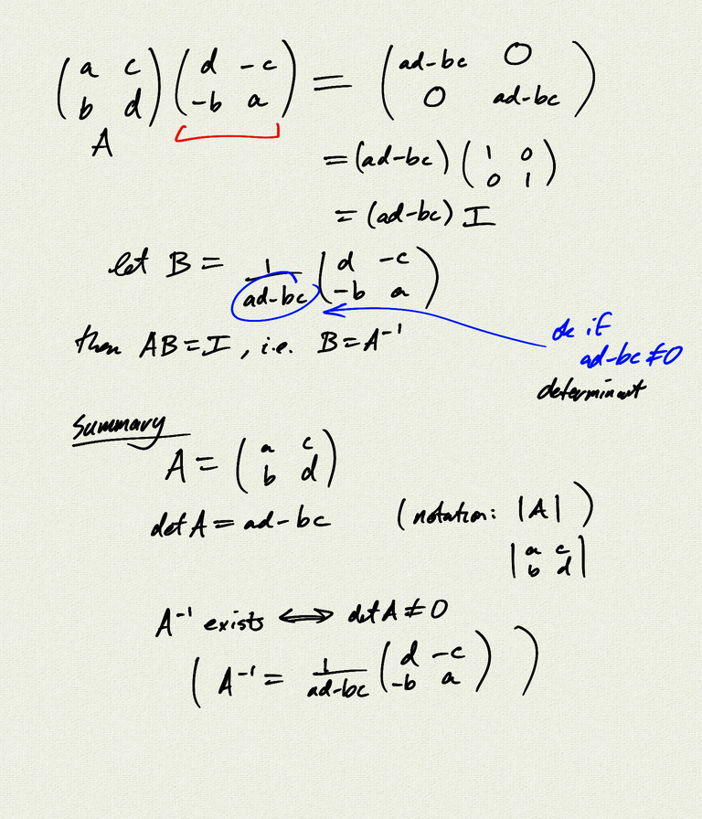
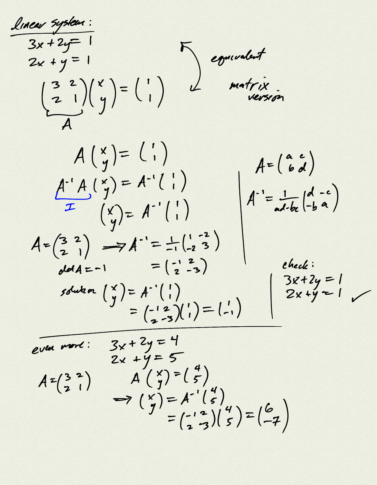

Skip to main content
Ctrl
+
K
Welcome to PCHA 2022-23!
Schedule 2022-23
Assignments
Course Information
Resources
Topics
Unit 1
1.1 Unit Circle
1.2 Trig Graphs
1.3-1.4 Inverse Trig Functions, Word Problems
Playground
Unit 2
2.1-2.2 Trig Identities
2.3 Multiple Angle Identities
2.4 Law of Sines / Cosines
Unit 3
3.1 Vectors
3.2 Dot Product
3.3 Parametric Equations
3.5 Polar Graphs
3.6 Linear Systems
3.7 Matrices
3.8 Matrix Inverses
Unit 4
4.1 Function Properties
4.2 Function Operations
4.3 Polynomials
4.4 More Polynomials
4.5 Fundamental Theorem of Algebra
4.6 Rational Functions
Unit 5
5.1 Parabolas
5.2 Ellipses
5.3 Hyperbolas
Unit 6
6.1 Combinatorics
6.2 Binomial Theorem
6.3 Probability
6.4 More Probability
6.5 Sequences
6.6 Series
6.x Bonus Lesson: Probability, Set Theory
Unit 7
7.1 Exponential / Logarithm
Unit 8
8.1 Limits
8.2 Continuity
8.3 The Derivative
8.4 Derivative Rules
8.5-8.6 Rates of Change, Trig Functions
Unit 9
9.1 Chain Rule
9.2 Implicit Differentiation
9.3 Exponential / Logarithm
9.4 Inverse Trig
About
Repository
Open issue
.md
.pdf
4.5 Fundamental Theorem of Algebra
4.5 Fundamental Theorem of Algebra
#
  